pacman::p_load(tidyverse)Hands-on Exercise 1
Getting Started
Installing and loading R packages
Importing the data
exam_data <- read_csv("data/Exam_data.csv")Rows: 322 Columns: 7
── Column specification ────────────────────────────────────────────────────────
Delimiter: ","
chr (4): ID, CLASS, GENDER, RACE
dbl (3): ENGLISH, MATHS, SCIENCE
ℹ Use `spec()` to retrieve the full column specification for this data.
ℹ Specify the column types or set `show_col_types = FALSE` to quiet this message.Introducing ggplot
R graphics vs ggplot
First, let us compare how R Graphics, the core graphical functions of Base R and ggplot plot a simple histogram.
hist(exam_data$MATHS)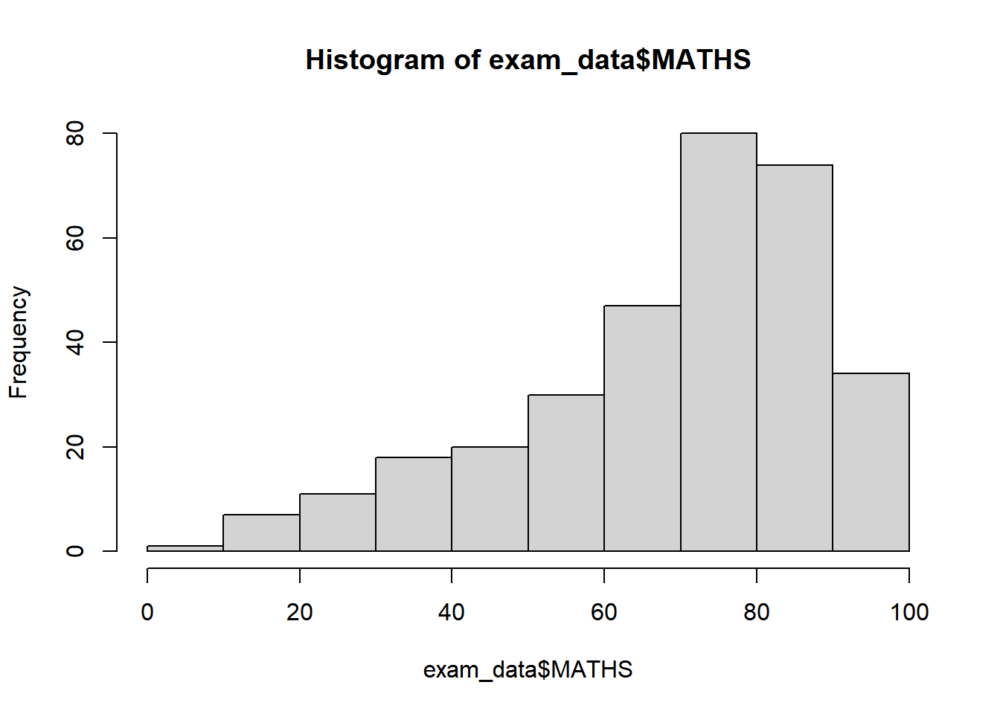
ggplot(data = exam_data,
aes(x = MATHS)) +
geom_histogram(bins = 10,
boundary = 100,
colour = "black",
fill = "grey") +
ggtitle("Distribution of Maths scores")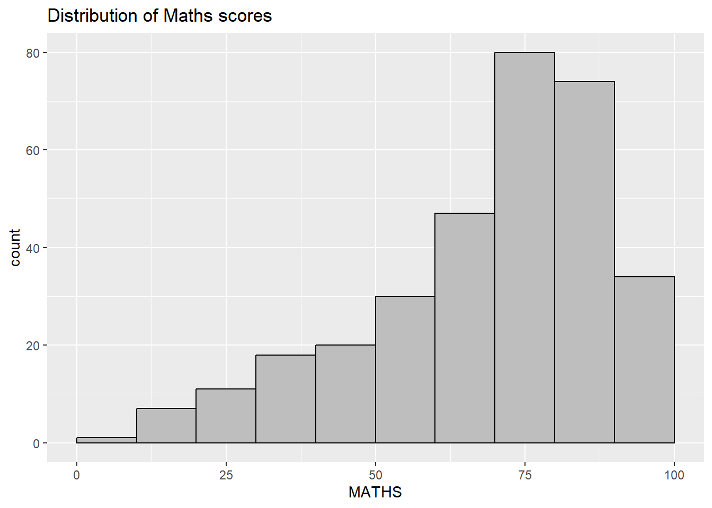
As you can see that the code chunk is relatively simple if R Graphics is used.
A Layered Grammar of Graphics
The elements of Grammar of Graphics are as follows.
Data: The dataset being plotted.
Aesthetics take attributes of the data and use them to influence visual characteristics, such as position, colours, size, shape, or transparency.
Geometrics: The visual elements used for our data, such as point, bar or line.
Facets split the data into subsets to create multiple variations of the same graph (paneling, multiple plots).
Statistics, statiscal transformations that summarise data (e.g. mean, confidence intervals).
Coordinate systems define the plane on which data are mapped on the graphic.
Themes modify all non-data components of a plot, such as main title, sub-title, y-aixs title, or legend background.
Working with Data
ggplot(data=exam_data)
Working with Aesthetics
The aesthetic mappings take attributes of the data and and use them to influence visual characteristics, such as position, colour, size, shape, or transparency. Each visual characteristic can thus encode an aspect of the data and be used to convey information.
All aesthetics of a plot are specified in the aes() function call
Code chunk below adds the aesthetic element into the plot.
ggplot(data=exam_data,
aes(x= MATHS))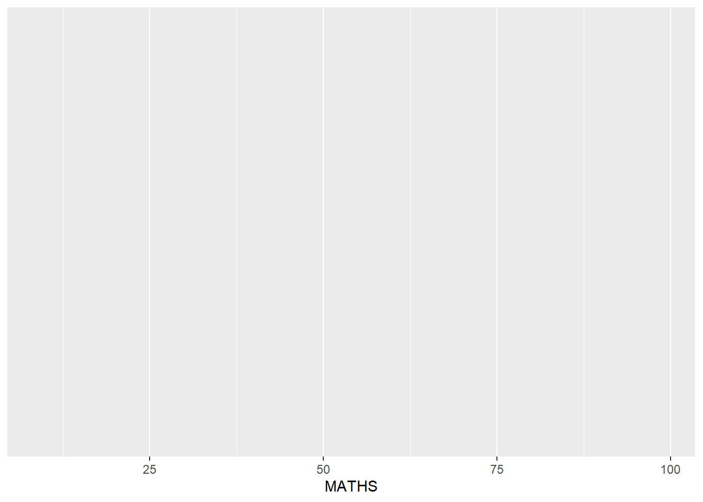
Working with Geometric objects
Plotting a Bar chart
ggplot(data=exam_data,
aes(x=RACE)) +
geom_bar()
Plotting a Dot plot
In a dot plot, the width of a dot corresponds to the bin width (or maximum width, depending on the binning algorithm), and dots are stacked, with each dot representing one observation.
ggplot(data=exam_data,
aes(x = MATHS)) +
geom_dotplot(dotsize = 0.5)Bin width defaults to 1/30 of the range of the data. Pick better value with
`binwidth`.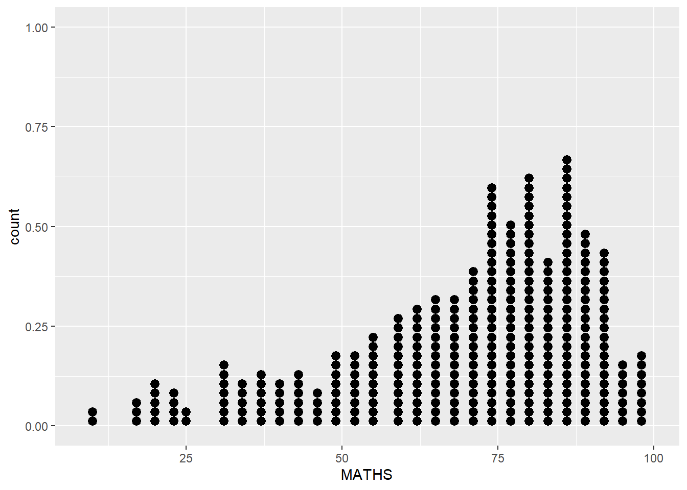
The scale_y_continuous() is used to turn off the y-axis, and binwidth argument is used to change the binwidth to 2.5.
ggplot(data=exam_data,
aes(x = MATHS)) +
geom_dotplot(binwidth=2.5,
dotsize = 0.5) +
scale_y_continuous(NULL,
breaks = NULL) 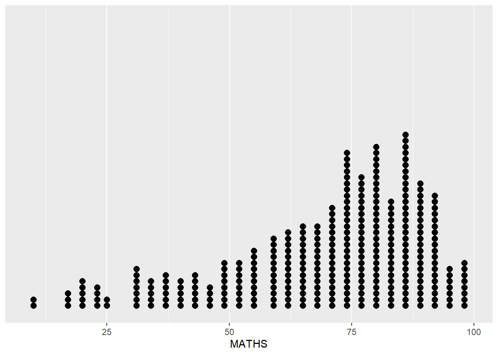
Plotting a histogram
Plot a histogram for Maths scores
ggplot(data=exam_data,
aes(x = MATHS)) +
geom_histogram() `stat_bin()` using `bins = 30`. Pick better value `binwidth`.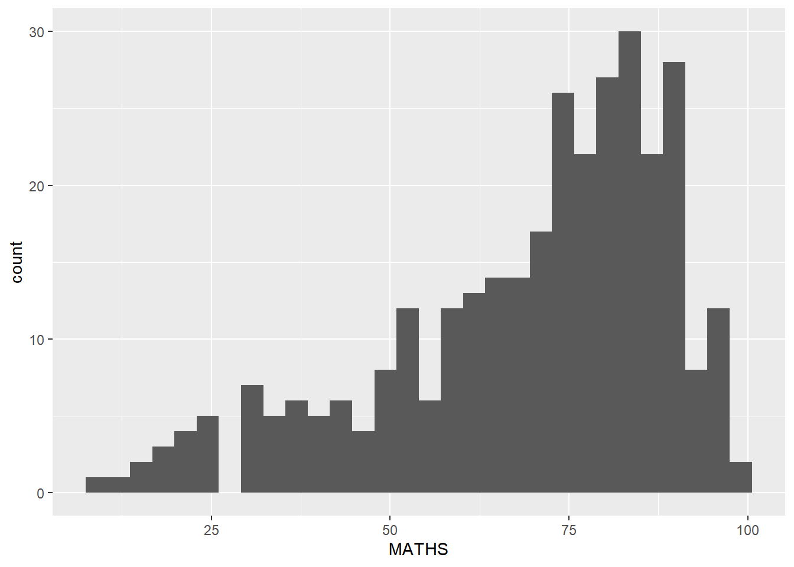
Modify the geometric object by changing the geom() object
ggplot(data=exam_data,
aes(x= MATHS)) +
geom_histogram(bins=20,
color="black",
fill="light blue") 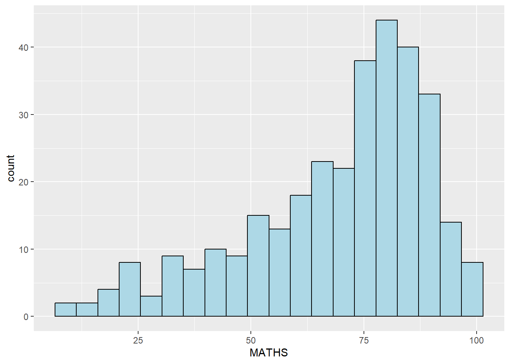
Modify the geometric object by changing the aes() object
ggplot(data=exam_data,
aes(x= MATHS,
fill = GENDER)) +
geom_histogram(bins=20,
color="grey30")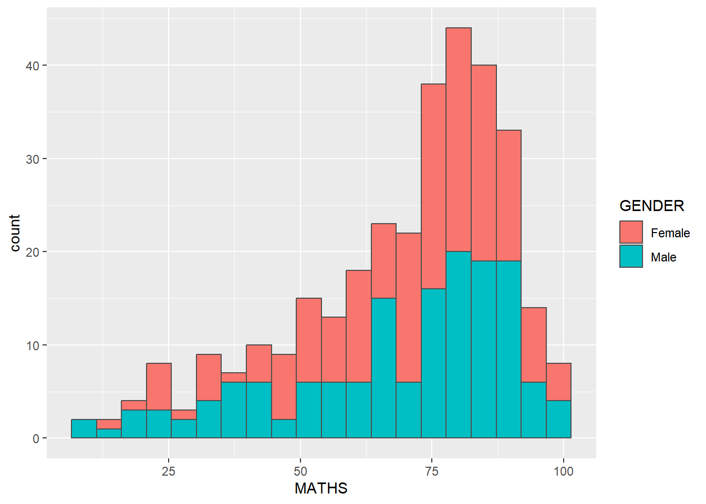
Plotting the kernel estimate density plot
The code below plots the distribution of Maths scores in a kernel density estimate plot.
ggplot(data=exam_data,
aes(x = MATHS)) +
geom_density() 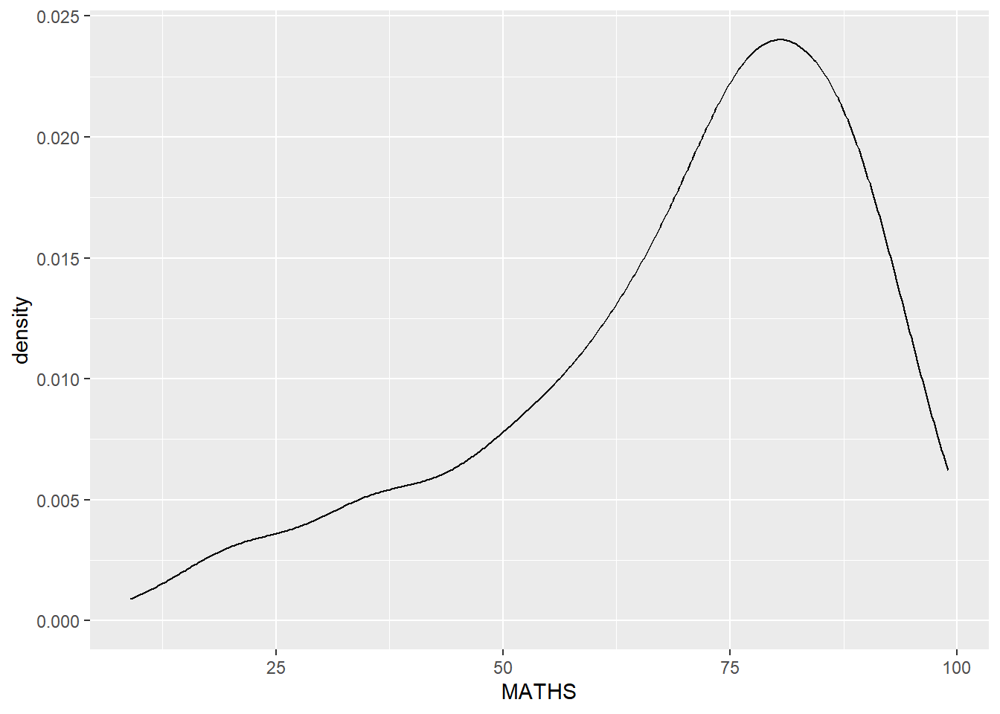
The code chunk below plots two kernel density lines by using colour or fill arguments of aes()
ggplot(data=exam_data,
aes(x = MATHS,colour=GENDER)) +
geom_density()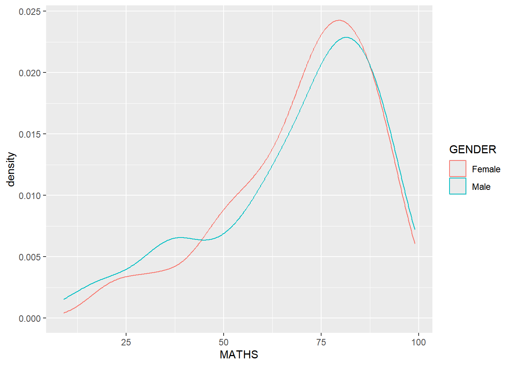
Plotting a Boxplot
ggplot(data=exam_data,
aes(y= MATHS,x = GENDER)) +
geom_boxplot()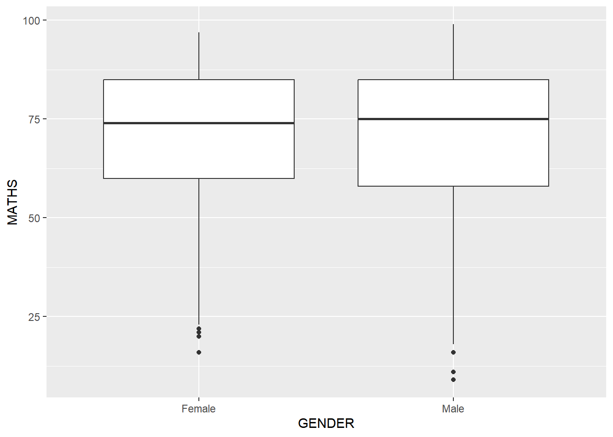
The code chunk below plots the distribution of Maths scores by gender in notched plot instead of boxplot.
ggplot(data=exam_data,
aes(y = MATHS,x = GENDER)) +
geom_boxplot(notch=TRUE)
Plotting a Violin Plot
The code below plot the distribution of Maths score by gender in violin plot.
ggplot(data=exam_data,
aes(y=MATHS, x=GENDER)) +
geom_violin()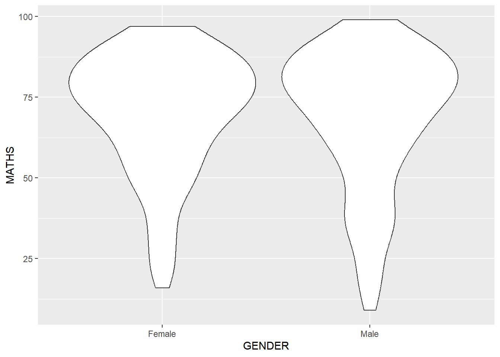
Plotting a Scatter Plot
The code chunk below plots a scatterplot showing the Maths and English grades of pupils.
ggplot(data=exam_data,
aes(x=MATHS, y=ENGLISH)) +
geom_point()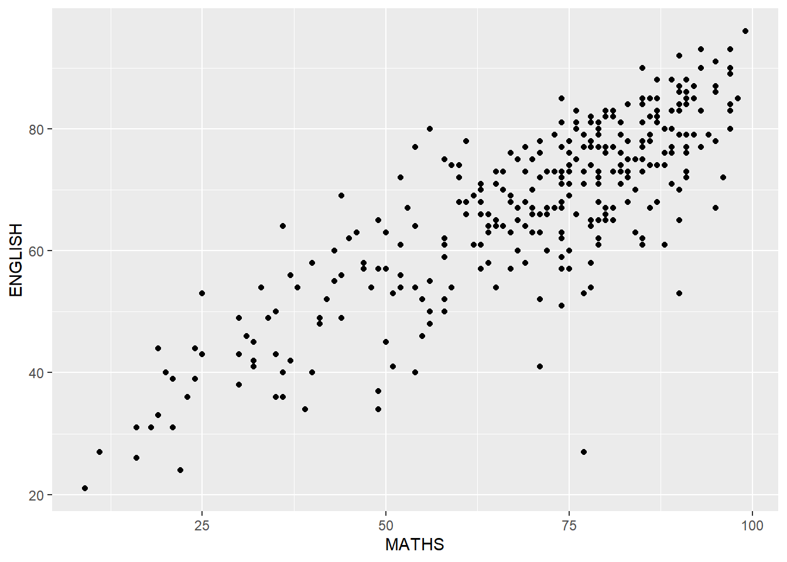
Combining geom objects: Boxplots and Scatter plots
The code chunk below plots the data points on the boxplots by using both geom_boxplot() and geom_point().
ggplot(data=exam_data,
aes(y=MATHS, x=GENDER)) +
geom_point(position="jitter", size=0.5) +
geom_boxplot()
Working with stat
Working with stat - the stat_summary() method
The code chunk below adds mean values by using stat_summary() function and overriding the default geom.
ggplot(data=exam_data,
aes(y=MATHS, x=GENDER)) +
geom_boxplot() +
stat_summary(geom= "point",
fun= "mean",
colour= "red",
size= 4)
Working with stat - the geom() method
The code chunk below adding mean values by using geom_() function and overriding the default stat.
ggplot(data=exam_data,
aes(y=MATHS, x=GENDER)) +
geom_boxplot() +
geom_point(stat="summary",
fun= "mean",
colour= "red",
size= 4)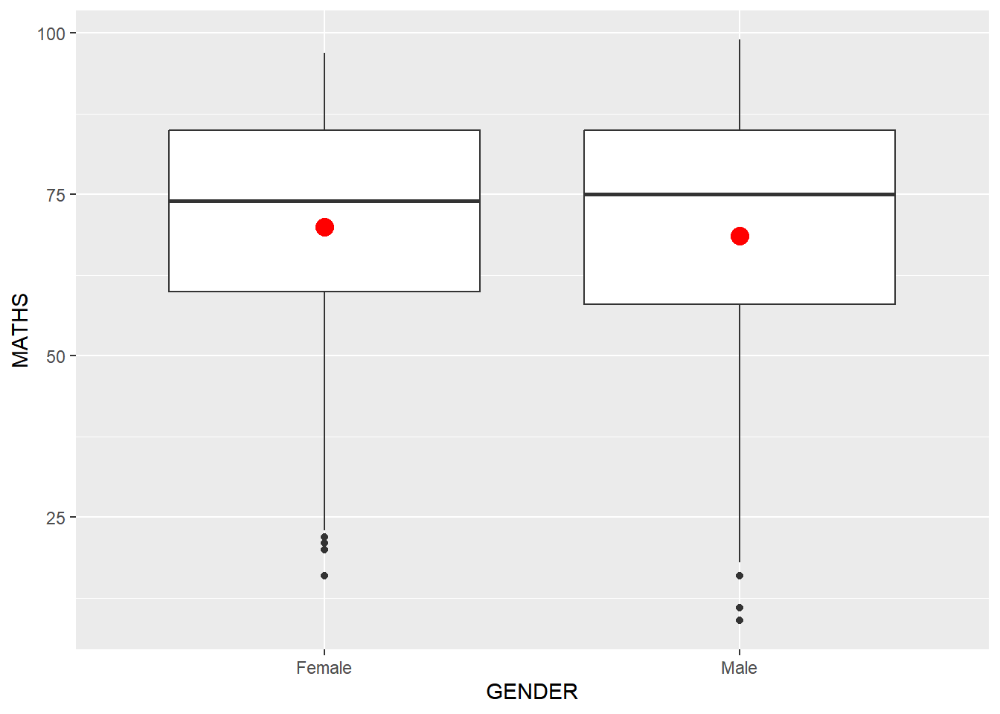
Adding a best fit curve on a scatter plot
The scatterplot below shows the relationship of Maths and English grades of pupils. The interpretability of this graph can be improved by adding a best fit curve.In the code chunk below, geom_smooth() is used to plot a best fit curve on the scatterplot.
ggplot(data=exam_data,
aes(y= ENGLISH, x= MATHS)) +
geom_point() +
geom_smooth(linewidth=0.5)`geom_smooth()` using method = 'loess' and formula = 'y ~ x'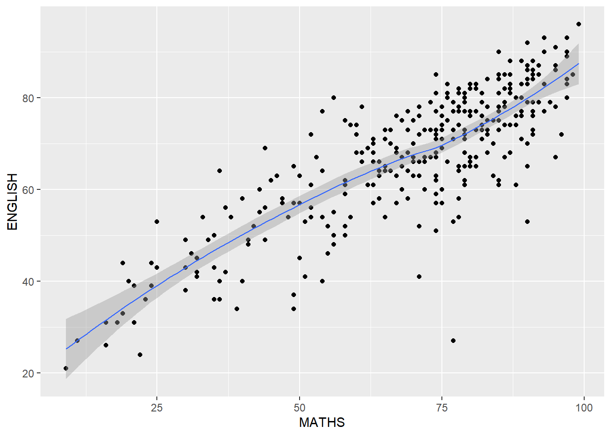
The default smoothing method is loess. The default smoothing method can be overridden as shown below.
ggplot(data= exam_data,
aes(y= ENGLISH, x= MATHS)) +
geom_point() +
geom_smooth(method= lm,
linewidth= 0.5)`geom_smooth()` using formula = 'y ~ x'
Working with facets
Working with facet_wrap()
facet_wrap wraps a 1d sequence of panels into 2d. This is generally a better use of screen space than facet_grid because most displays are roughly rectangular. The code chunk below plots a trellis plot using facet-wrap().
ggplot(data = exam_data,
aes(x = MATHS)) +
geom_histogram(bins = 25) +
facet_wrap(~ CLASS)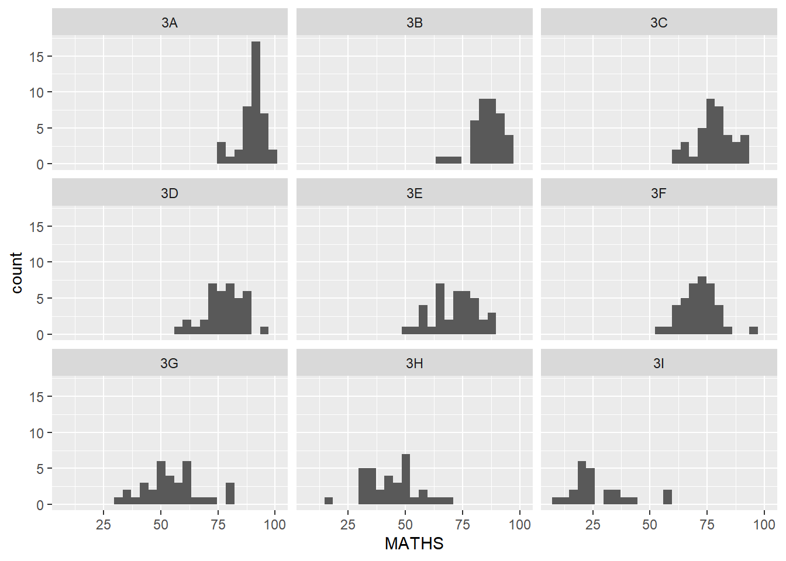
Working with facet_grid()
facet_grid() forms a matrix of panels defined by row and column facetting variables. It is most useful when you have two discrete variables, and all combinations of the variables exist in the data. The code chunk below plots a trellis plot using facet_grid().
ggplot(data = exam_data,
aes(x = MATHS)) +
geom_histogram(bins = 25) +
facet_grid(~ CLASS)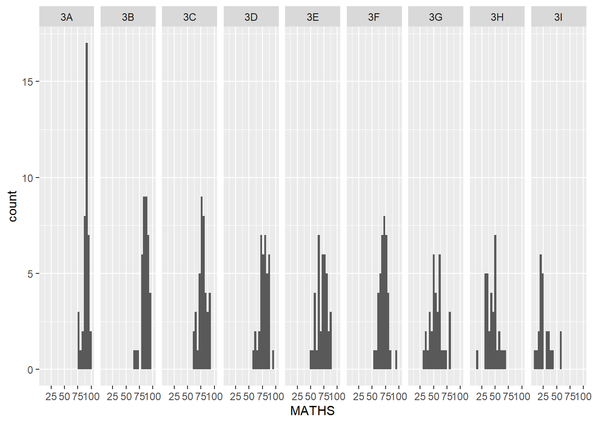
Working with Coordinate
By the default, the bar chart of ggplot2 is in vertical form.
ggplot(data = exam_data,
aes(x=RACE)) +
geom_bar()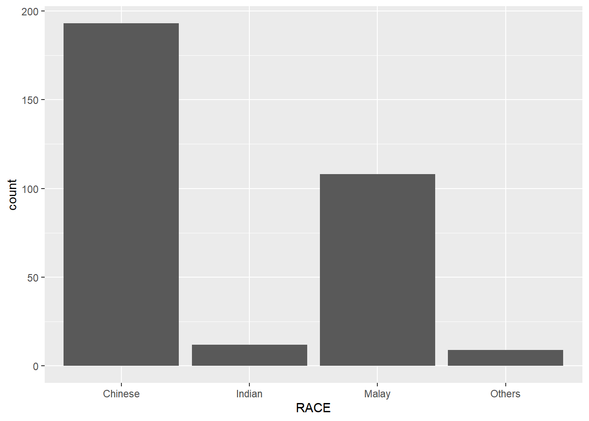
The code chunk below flips the horizontal bar chart into vertical bar chart by using coord_flip().
ggplot(data = exam_data,
aes(x = RACE)) +
geom_bar() +
coord_flip()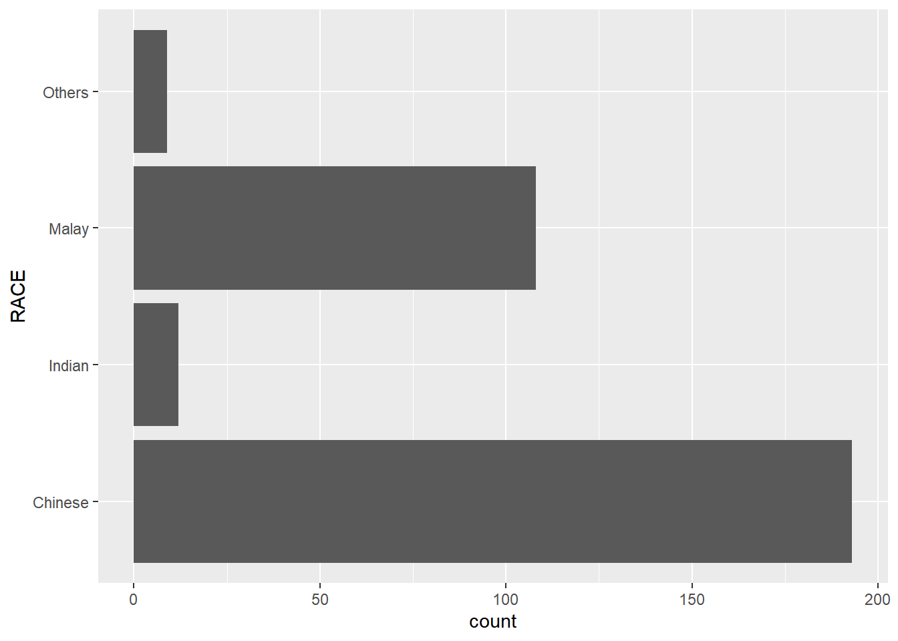
Changing the x and y-axis range
The scatter plot below is slightly misleading because the y-axis and x-axis range are not equal.
ggplot(data = exam_data,
aes(x = MATHS, y = ENGLISH)) +
geom_point() +
geom_smooth(method = lm, linewidth=0.5)`geom_smooth()` using formula = 'y ~ x'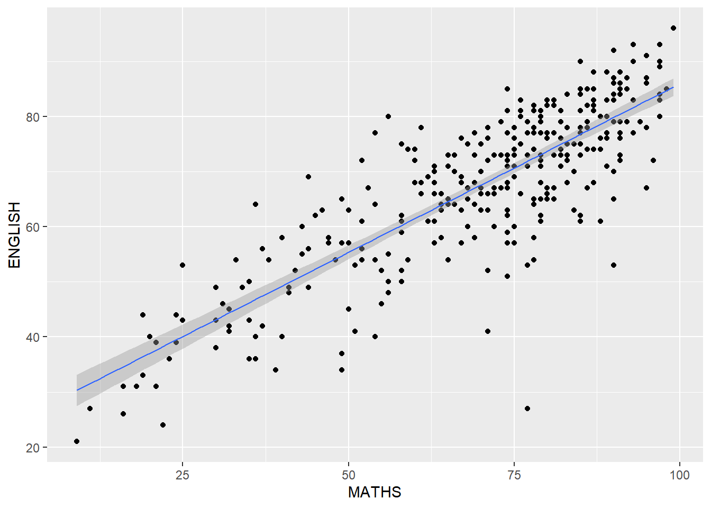
The code chunk below fixed both the y-axis and x-axis range from 0-100.
ggplot(data = exam_data,
aes(x = MATHS, y = ENGLISH)) +
geom_point() +
geom_smooth(method = lm, linewidth=0.5) +
coord_cartesian(xlim = c(0, 100),
ylim = c(0, 100))`geom_smooth()` using formula = 'y ~ x'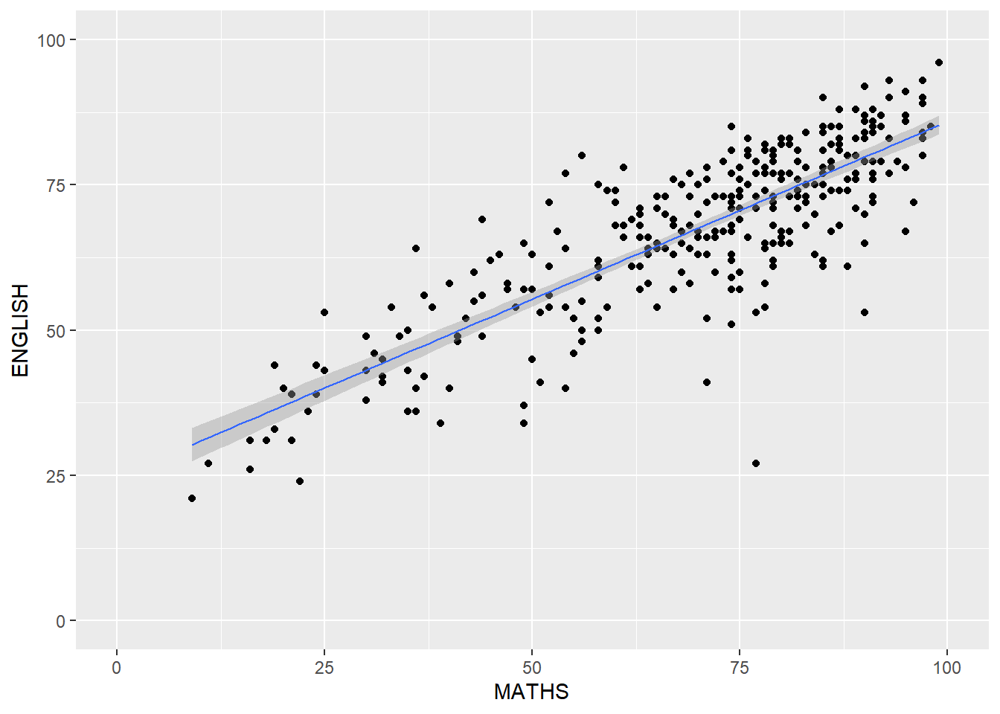
Working with themes
Themes control elements of the graph not related to the data. For example:
- background colour
- size of fonts
- gridlines
- colour of labels
The code chunk below plot a horizontal bar chart using theme_gray().
ggplot(data= exam_data,
aes(x = RACE)) +
geom_bar() +
coord_flip() +
theme_gray()
A horizontal bar chart plotted using theme_classic().
ggplot(data = exam_data,
aes(x = RACE)) +
geom_bar() +
coord_flip() +
theme_classic()
A horizontal bar chart plotted using theme_minimal().
ggplot(data = exam_data,
aes(x = RACE)) +
geom_bar() +
coord_flip() +
theme_minimal()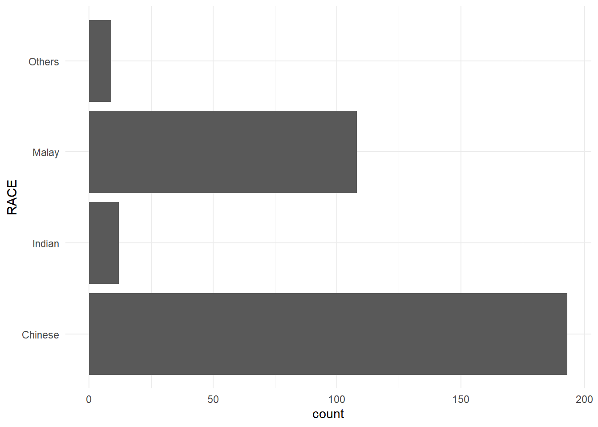
References
- Hadley Wickham (2023) ggplot2: Elegant Graphics for Data Analysis. Online 3rd edition.
- Winston Chang (2013) R Graphics Cookbook 2nd edition. Online version.
- Healy, Kieran (2019) Data Visualization: A practical introduction. Online version